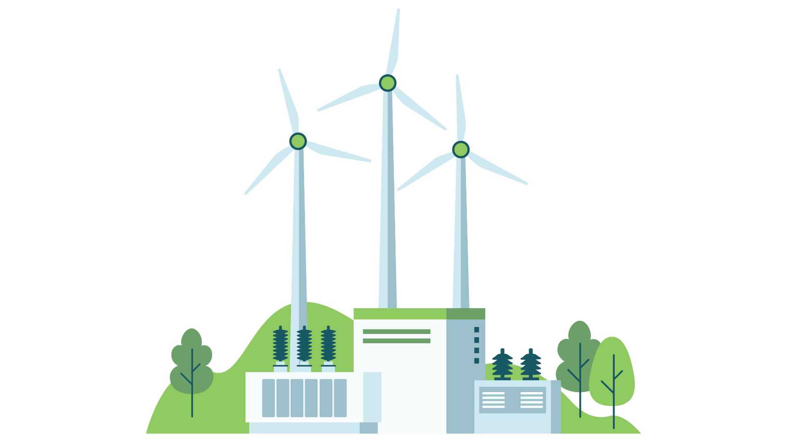

Pembangkit Listrik Tenaga Bayu (PLTB) atau turbin angin adalah sistem yang mengubah energi kinetik hembusan angin menjadi energi mekanik putaran rotor, lalu dikonversi menjadi energi listrik. Mari pelajari aerodinamika sudu, komponen nacelle, serta perhitungan potensinya!

🎯 Setelah mempelajari materi ini, kamu diharapkan mampu:
Menjelaskan prinsip gaya angkat (lift force) aerodinamika pada bilah turbin angin
Mengidentifikasi komponen utama PLTB (rotor, gearbox, generator, anemometer)
Memahami pengaruh kecepatan angin dan diameter rotor terhadap daya listrik
Memahami batas efisiensi Betz Limit dalam ekstraksi energi angin
⏱
Durasi
15-20 Menit
🎯
Fokus
Wind Engineering
📚
Materi
10 Submateri
01
Prinsip Fisika Aerodinamika
💨
Energi Kinetik Angin
Massa udara yang bergerak memiliki energi kinetik berbanding lurus dengan kuadrat kecepatannya.
✈️
Gaya Angkat (Lift Force)
Bentuk penampang bilah (airfoil) menciptakan perbedaan tekanan udara yang menghasilkan gaya angkat untuk memutar rotor.
⚙️
Peningkatan Putaran
Sistem transmisi (gearbox) menaikkan kecepatan putaran poros pelan dari rotor menjadi putaran cepat untuk generator.
🧲
Konversi Elektromagnetik
Generator mengubah putaran cepat poros menjadi energi listrik arus bolak-balik (AC).
02
Cara Kerja PLTB
Perhatikan alur konversi energi angin hingga menjadi energi listrik siap pakai:
💨 Hembusan Angin
→
🌀 Bilah & Rotor
→
⚙️ Gearbox / Poros
→
⚡ Generator
→
🏠 Jaringan Beban
💨
1. Terpaan Angin
Angin mengenai bilah turbin dengan kecepatan tertentu (kecepatan awal minimal dinamakan cut-in speed).
🌀
2. Putaran Rotor & Yawing
Bilah berputar akibar gaya angkat. Sistem Yaw Mechanism (motor penggerak poros vertikal) mengarahkan kepala turbin selalu menghadap datangnya angin.
⚙️
3. Transmisi Gearbox
Mengubah putaran lambat rotor (10-20 RPM) menjadi putaran tinggi (1000-1500 RPM) yang dibutuhkan generator.
⚡
4. Generasi & Inverter
Listrik yang dihasilkan disesuaikan frekuensi dan tegangannya sebelum disalurkan ke sistem jaringan listrik.
🤔 Coba Pikirkan!
Mengapa turbin angin komersial modern hampir selalu dibangun sangat tinggi dengan bilah raksasa berukuran puluhan meter?
03
Komponen Utama PLTB
🌀
Rotor & Bilah (Blades)
Komponen penangkap angin. Umumnya terdiri dari 3 bilah berdesain aerodinamis berbahan fiberglass/karbon.
🏠
Nacelle
Rumah/kotak pelindung utama di puncak menara yang berisi poros, gearbox, generator, dan pengereman.
📶
Anemometer & Vane
Sensor pengukur kecepatan dan arah angin yang terhubung otomatis ke sistem komputer pengontrol turbin.
🗼
Menara (Tower)
Struktur penyangga dari baja tebal untuk menopang nacelle pada ketinggian yang kaya akan kecepatan angin deras.
04
Faktor yang Mempengaruhi Kinerja PLTB
💨 Kecepatan Angin (v): Faktor paling krusial karena daya berbanding lurus dengan pangkat tiga kecepatan (v³).
📐 Luas Sapuan Rotor (A): Semakin panjang bilah, semakin luas area penangkapan energi angin.
🌡️ Kerapatan Udara (ρ): Udara dingin/padat membawa energi lebih besar dibanding udara panas/tipis.
🗼 Ketinggian Menara: Angin di tempat tinggi lebih stabil dan tidak terhalang pepohonan/bangunan.
✋ Batas Efisiensi Betz (Betz Limit): Batas teoritis maksimal konversi energi angin adalah 59,3%.
05
🛠 Bagaimana Engineer Merancang PLTB?
Seorang engineer merancang PLTB dengan menganalisis peta angin suatu wilayah dan menyesuaikan spesifikasi teknis turbin.
📊
Analisis Profil Angin
Engineer memasang menara anemometer selama minimal 1 tahun untuk mengukur:
Rata-rata Kecepatan: Kecepatan harian dan musiman.
Arah Dominan: Menentukan orientasi pemasangan turbin.
Kecepatan Ekstrem: Memastikan keamanan struktur saat badai.
🌀
Sumbu Rotasi Turbin
Dua jenis utama turbin angin berdasarkan porosnya:
HAWT (Horizontal Axis): Poros horizontal, efisiensi sangat tinggi (paling populer).
VAWT (Vertical Axis): Poros vertikal, cocok untuk angin dari segala arah di perkotaan.
🎛️
Batas Kecepatan Kerja
Tiga titik batas kecepatan angin pada spesifikasi turbin:
Cut-in Speed (~3 m/s): Kecepatan angin minimal agar turbin mulai berputar.
Rated Speed (~12 m/s): Kecepatan saat daya listrik mencapai maksimum.
Daya teoritis angin yang ditangkap rotor dirumuskan dengan:
P = ½ × ρ × A × v³ × Cp
Keterangan & Satuan:
P = Daya listrik yang dihasilkan (Watt)
ρ = Kerapatan udara (≈1,225 kg/m³)
A = Luas sapuan rotor (m²) → A = π × r²
v = Kecepatan angin (m/s)
Cp = Koefisien daya aerobatik (maksimal 0,59)
06
🔄 Tahapan Engineering Design
📊 Ukur Kecepatan Angin
→
📐 Hitung Luas Rotor & Tinggi
→
🌀 Pilih Jenis Turbin
→
✅ Simulasi Output Daya
💡 Tips Engineer
Ingat bahwa kecepatan angin (v) dipangkatkan tiga (v³)! Kenaikan kecepatan angin 2 kali lipat akan meningkatkan potensi daya listrik hingga 8 kali lipat (2³ = 8). Maka pemilihan lokasi berangin deras adalah kunci utama keberhasilan PLTB!
🚀 Persiapan Virtual Laboratory
Setelah ini kamu akan masuk ke laboratorium virtual untuk merancang ladang angin (wind farm). Terapkan prinsip penyesuaian panjang bilah dan tinggi menara sesuai kecepatan angin lokasi!
07
✅ Kelebihan
Sumber energi terbarukan murni tanpa emisi karbon.
Penggunaan lahan bawah menara masih bisa untuk pertanian/peternakan.
Biaya produksi energi sangat kompetitif di daerah pesisir/bukit.
❌ Kekurangan
Intermiten (kecepatan angin tidak selalu konstan setiap saat).
Potensi dampak visual dan kebisingan suara putaran bilah.
Investasi awal menara dan pondasi terbilang tinggi.
08
💡 Tahukah Kamu?
Indonesia memiliki Kebun Angin terbesar di Sidrap dan Jeneponto, Sulawesi Selatan, dengan kapasitas total ratusan Megawatt!
Satu putaran bilah turbin angin skala besar modern dapat menyuplai kebutuhan listrik rumah tangga selama seharian.
09
📝 Ringkasan Materi
PLTB mengonversi energi kinetik angin menjadi energi mekanik rotor lalu menjadi energi listrik generator.
Daya angin dipengaruhi sangat dominan oleh kecepatan angin (v³) dan luas sapuan rotor (A).
Menara dibuat tinggi untuk mendapatkan hembusan angin yang lebih deras dan stabil tanpa hambatan.
10
✅ Apa yang Sudah Saya Pelajari?
☑ Saya memahami prinsip aerodinamika gaya angkat pada bilah turbin.
☑ Saya memahami fungsi nacelle, gearbox, generator, dan sensor angin.
☑ Saya tahu pengaruh hubungan kuadratis luas rotor dan kubik kecepatan angin.
☑ Saya siap melakukan simulasi desain PLTB di Virtual Lab.
11
🧠 Cek Pemahaman
Jawablah pertanyaan berikut untuk menguji pemahamanmu: